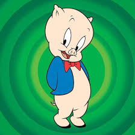
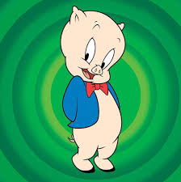

Vamos Testar Links e Imagens nesta aula 3 e 4 Vamos Testar Links e Imagens nesta aula 3 e 4
Vamos Testar Links e Imagens nesta aula 3 e 4 Vamos Testar Links e Imagens nesta aula 3 e 4 Agora Vamos ver como interconectar as páginas:
Vá para o Twitter (e permaneça na página)
Aqui nos deparamos com o teste . Entende a lógica?
Aqui fica o loop de ir e voltar , LINK TESTE
Patolino, Gaguinho e Frajola
 
